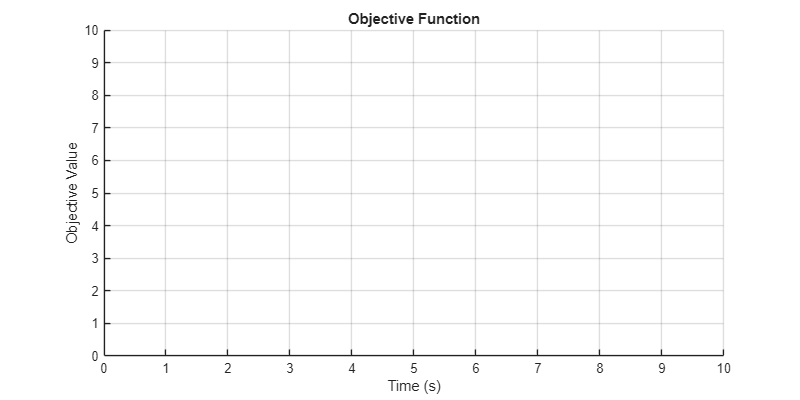
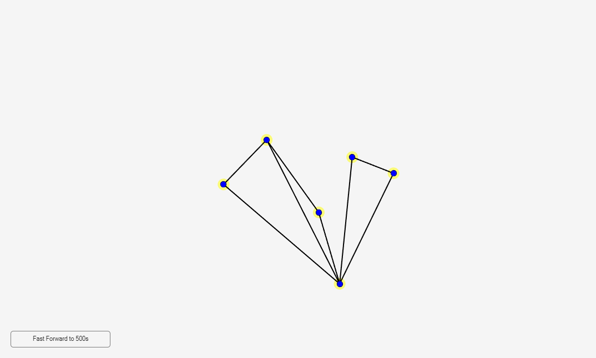
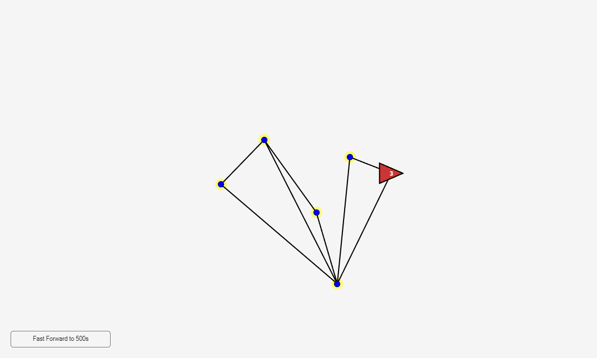
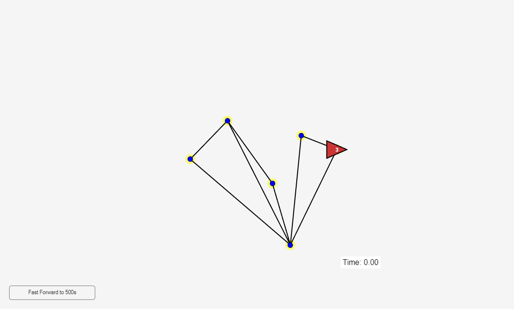
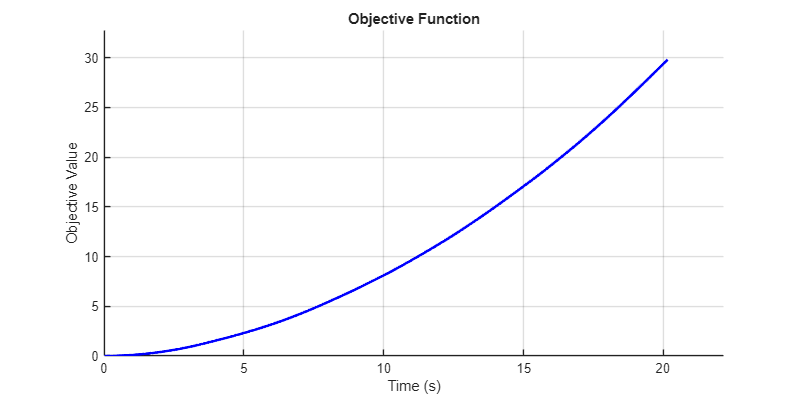

Contents
clear; close all; clc;
Parameters
num_targets = 6;
num_agents = 3;
max_edges = 8;
fps = 60;
dt = 1 / fps;
Fast Forward Flag
fastForwardRequested = false;
Main Figure Setup
mainFig = figure('Name', 'Agent-Target Simulation');
ax = axes(mainFig);
axis(ax, [0 100 0 100]);
axis equal;
grid off;
axis off;
hold(ax, 'on');
uicontrol('Style', 'pushbutton', 'String', 'Fast Forward to 500s', ...
'Position', [20 20 180 30], ...
'Callback', @(~,~) assignin('base', 'fastForwardRequested', true));

Uncertainty Figure
uncertaintyFig = figure('Name', 'Objective Function', 'Position', [100 100 800 400]);
uncertaintyAxes = axes(uncertaintyFig);
title('Objective Function');
xlabel('Time (s)');
ylabel('Objective Value');
grid on;
hold on;
initialCapacity = 500;
timeHistory = zeros(1, initialCapacity);
uncertaintyHistory = zeros(1, initialCapacity);
currentIndex = 1;
uncertaintyPlot = plot(uncertaintyAxes, 0, 0, 'b-', 'LineWidth', 2);
xlim([0 10]);
ylim([0 10]);

Target Placement
targets = Target.empty(num_targets, 0);
minDist = 15;
placed = 0;
while placed < num_targets
pos = [rand()*80 + 10, rand()*80 + 10];
valid = all(arrayfun(@(t) norm(pos - t.position) >= minDist, targets(1:placed)));
if valid
placed = placed + 1;
targets(placed) = Target(placed, pos);
end
end
Edge Creation
edges = Edge.empty(0, max_edges);
adjMatrix = false(num_targets);
for i = 1:num_targets-1
for j = i+1:num_targets
if length(edges) >= max_edges
break;
end
newEdge = [targets(i).position; targets(j).position];
valid = true;
for e = 1:length(edges)
existing = [edges(e).targets(1).position; edges(e).targets(2).position];
if linesIntersect(newEdge(1,:), newEdge(2,:), existing(1,:), existing(2,:))
valid = false;
break;
end
end
if valid
edges(end+1) = Edge(length(edges)+1, [targets(i), targets(j)]);
adjMatrix(i,j) = true;
adjMatrix(j,i) = true;
end
end
end
Draw Initial Scene
for e = 1:length(edges), edges(e).draw(ax); end
for t = 1:num_targets, targets(t).draw(ax); end

Agent Creation
agents = Agent.empty(num_agents, 0);
starts = randi(num_targets, num_agents, 1);
for a = 1:num_agents
agents(a) = Agent(a, targets(starts(a)).position, 80);
agents(a).draw(ax);
end

Simulation Timer
simTime = 0;
timeDisplay = text(ax, 95, 5, sprintf('Time: %.2f', simTime), ...
'FontSize', 12, 'Color', 'k', ...
'HorizontalAlignment', 'right', ...
'BackgroundColor', 'w');

=== Main Simulation Loop ===
while ishandle(mainFig)
axis(ax, [0 100 0 100]);
if evalin('base', 'exist(''fastForwardRequested'', ''var'') && fastForwardRequested')
disp('Fast-forwarding to 500 seconds...');
while simTime < 500
for a = 1:num_agents
agent = agents(a);
if agent.movementActive
if agent.stepIndex <= length(agent.xSteps)
agent.position = [agent.xSteps(agent.stepIndex), agent.ySteps(agent.stepIndex)];
agent.stepIndex = agent.stepIndex + 1;
else
agent.movementActive = false;
agent.dwellTime = rand()*2 + 1;
end
elseif agent.dwellTime > 0
agent.dwellTime = agent.dwellTime - dt;
else
[targetPos, ~] = agent.randomChoice(targets, adjMatrix);
if ~isempty(targetPos)
delta = targetPos - agent.position;
agent.orientation = atan2(delta(2), delta(1));
distance = norm(delta);
steps = max(ceil(distance / agent.speed * fps), 1);
agent.xSteps = linspace(agent.position(1), targetPos(1), steps);
agent.ySteps = linspace(agent.position(2), targetPos(2), steps);
agent.stepIndex = 1;
agent.movementActive = true;
end
end
end
currentUncertainty = 0;
for t = 1:num_targets
nearby = Agent.empty(0, 0);
for a = 1:num_agents
if norm(agents(a).position - targets(t).position) < 0.1
nearby(end+1) = agents(a);
end
end
targets(t).updateResidingAgents(nearby, simTime);
targets(t).updateUncertainty(dt);
currentUncertainty = currentUncertainty + targets(t).R;
end
simTime = simTime + dt;
if currentIndex > length(timeHistory)
newSize = length(timeHistory) * 2;
timeHistory = [timeHistory, zeros(1, newSize - length(timeHistory))];
uncertaintyHistory = [uncertaintyHistory, zeros(1, newSize - length(uncertaintyHistory))];
end
timeHistory(currentIndex) = simTime;
uncertaintyHistory(currentIndex) = currentUncertainty;
currentIndex = currentIndex + 1;
end
disp('Fast forward complete.');
assignin('base', 'fastForwardRequested', false);
end
for a = 1:num_agents
agent = agents(a);
if agent.movementActive
if agent.stepIndex <= length(agent.xSteps)
agent.position = [agent.xSteps(agent.stepIndex), agent.ySteps(agent.stepIndex)];
agent.stepIndex = agent.stepIndex + 1;
else
agent.movementActive = false;
agent.dwellTime = rand()*2 + 1;
end
elseif agent.dwellTime > 0
agent.dwellTime = agent.dwellTime - dt;
else
[targetPos, ~] = agent.randomChoice(targets, adjMatrix);
if ~isempty(targetPos)
delta = targetPos - agent.position;
agent.orientation = atan2(delta(2), delta(1));
distance = norm(delta);
steps = max(ceil(distance / agent.speed * fps), 1);
agent.xSteps = linspace(agent.position(1), targetPos(1), steps);
agent.ySteps = linspace(agent.position(2), targetPos(2), steps);
agent.stepIndex = 1;
agent.movementActive = true;
end
end
agent.updatePosition();
end
currentUncertainty = 0;
for t = 1:num_targets
nearby = Agent.empty(0, 0);
for a = 1:num_agents
if norm(agents(a).position - targets(t).position) < 0.1
nearby(end+1) = agents(a);
end
end
targets(t).updateResidingAgents(nearby, simTime);
targets(t).updateUncertainty(dt);
currentUncertainty = currentUncertainty + targets(t).R;
end
simTime = simTime + dt;
set(timeDisplay, 'String', sprintf('Time: %.2f', simTime));
if currentIndex > length(timeHistory)
timeHistory = [timeHistory, zeros(1, length(timeHistory))];
uncertaintyHistory = [uncertaintyHistory, zeros(1, length(uncertaintyHistory))];
end
timeHistory(currentIndex) = simTime;
uncertaintyHistory(currentIndex) = currentUncertainty;
currentIndex = currentIndex + 1;
if mod(currentIndex, 5) == 0
if currentIndex > 2
tData = timeHistory(1:currentIndex-1);
uData = uncertaintyHistory(1:currentIndex-1);
integralData = (1 / simTime) * cumtrapz(tData(:), uData(:));
set(uncertaintyPlot, 'XData', tData, 'YData', integralData);
if tData(end) > xlim(uncertaintyAxes)*0.9
xlim(uncertaintyAxes, [0 tData(end)*1.1]);
end
if max(integralData) > ylim(uncertaintyAxes)*0.9
ylim(uncertaintyAxes, [0 max(integralData)*1.1]);
end
end
end
drawnow;
end
